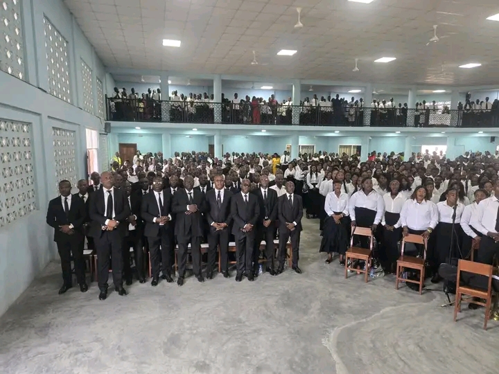
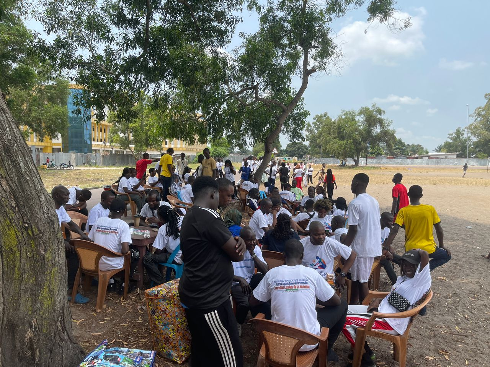

Horaires des cultes
Culte dominical
Dimanche, 9h00
Enseignements, sacrements et communion. Cœur de notre vie communautaire.
Réunions de prière
En semaine
Moments de prière et de méditation pour approfondir la foi. Consultez les annonces pour les horaires.
Activités jeunesse
Selon programme
Formation biblique, chorale et rencontres pour les jeunes. Voir la page Événements.
Programme hebdomadaire
- Dim Culte dominical – 9h00
- Mer Réunion de prière – horaire communiqué
- Sam Préparation jeunesse / Chorale – selon calendrier
Calendrier des événements
Les fêtes et événements spéciaux (Noël, Pâques, fêtes de jeunesse, etc.) sont annoncés dans la rubrique Actualités et Événements.
Suivre le culte en ligne
Vous ne pouvez pas vous déplacer ? Retrouvez nos cultes et méditations sur nos chaînes officielles.
Voir les Médias & Live